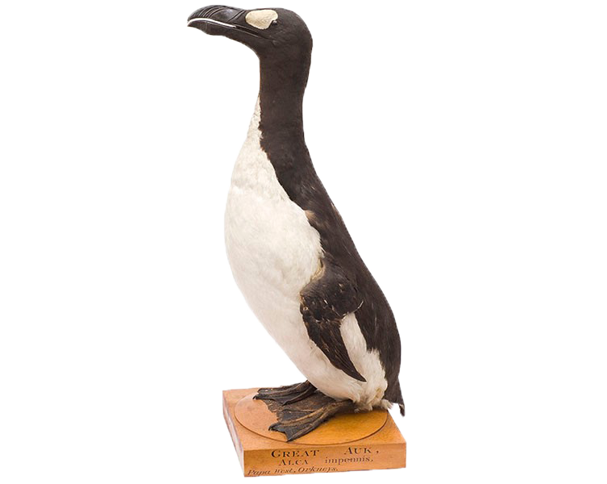

AUROCHS
Or rarely aurochsen, also known as urus or ure (Bos primigenius), is an extinct species of large wild cattle that inhabited Asia, Europe, and North Africa. It is the ancestor of domestic cattle; it has also been suggested as an ancestor genetically to the modern European bison, which crossbred with steppe bison. The species survived in Europe until 1627, when the last recorded aurochs died in the Jaktorów Forest, Poland.
The dodo (Raphus cucullatus) is an extinct flightless bird that was endemic to the island of Mauritius, east of Madagascar in the Indian Ocean. The dodo's closest genetic relative was the also-extinct Rodrigues solitaire, the two forming the subfamily Raphinae of the family of pigeons and doves. The closest living relative of the dodo is the Nicobar pigeon. A white dodo was once thought to have existed on the nearby island of Réunion, but this is now thought to have been confusion based on the Réunion ibis and paintings of white dodos.

The great auk (Pinguinus impennis) is a species of flightless alcid that became extinct in the mid-19th century. It was the only modern species in the genus Pinguinus. It is not closely related to the birds now known as penguins, which were discovered later and so named by sailors because of their physical resemblance to the great auk. On 3 June 1844, the last two confirmed specimens were killed on Eldey, off the coast of Iceland, ending the last known breeding attempt.
The passenger pigeon or wild pigeon (Ectopistes migratorius) is an extinct species of pigeon that was endemic to North America. Its common name is derived from the French word passager, meaning "passing by", due to the migratory habits of the species. The scientific name also refers to its migratory characteristics. The morphologically similar mourning dove (Zenaida macroura) was long thought to be its closest relative, and the two were at times confused, but genetic analysis has shown that the genus Patagioenas is more closely related to it than the Zenaida doves. Martha, thought to be the last passenger pigeon, died on September 1, 1914, at the Cincinnati Zoo. The eradication of this species is a notable example of anthropogenic extinction.
The quagga(Equus quagga quagga) was a plains zebra that lived in South Africa until becoming extinct late in the 19th century. It was long thought to be a distinct species, but early genetic studies have supported it being a subspecies of plains zebra. A more recent study suggested that it was merely the southernmost cline or ecotype of the species. The name was derived from its call, which sounded like "kwa-ha-ha". After the Dutch settlement of South Africa began, the quagga was heavily hunted as it competed with domesticated animals for forage. Some were taken to zoos in Europe, but breeding programmes were unsuccessful. The last wild population lived in the Orange Free State, and the quagga was extinct in the wild by 1878. The last captive specimen died in Amsterdam on 12 August 1883. Only one quagga was ever photographed alive and only 23 skins are preserved today. In 1984, the quagga was the first extinct animal to have its DNA analysed, and the Quagga Project is trying to recreate the phenotype of hair coat pattern and related characteristics by selectively breeding Burchell's zebras.
The thylacine(Thylacinus cynocephalus), now extinct, is one of the largest known carnivorous marsupials, evolving about 4 million years ago. The last known live animal was captured in 1933 in Tasmania. It is commonly known as the Tasmanian tiger because of its striped lower back, or the Tasmanian wolf because of its canid-like characteristics. New Guinea, and the Australian mainland. The thylacine had become extinct on the Australian mainland before British settlement of the continent, but it survived on the island of Tasmania along with several other endemic species, including the Tasmanian devil. Intensive hunting encouraged by bounties is generally blamed for its extinction, but other contributing factors may have been disease, the introduction of dogs, and human encroachment into its habitat.


{kind=link}
{kind=link}
{kind=link}